This page is from a previous offering of the course. It has been left up for archival purposes.=======
This page is under construction. Any content you see now is subject to change until the first day of class. Expect some links to be broken until that time.>>>>>>> fb8bf452508ff58a521349f35e7d1313032b26de
1 Instructor
1.1 Nathan Brunelle
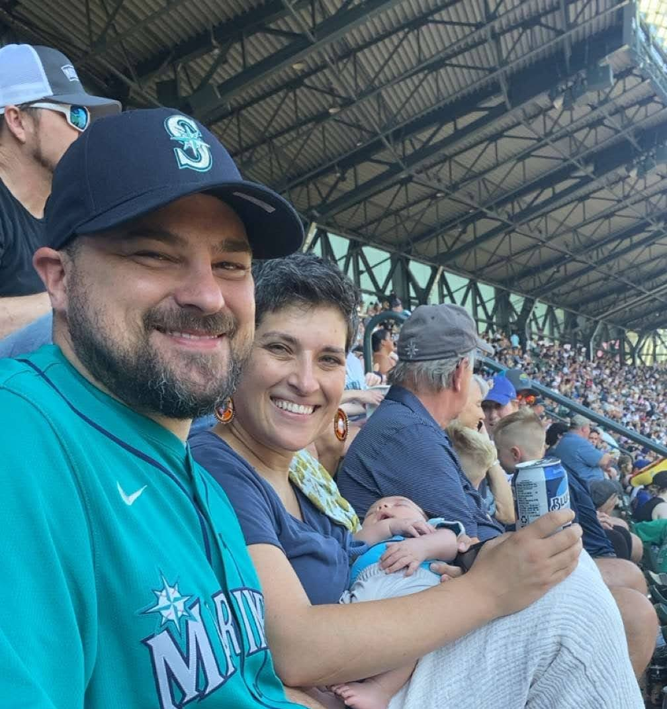
Hi, I’m Nathan! I grew up in Virginia Beach, VA, then moved to Charlottesville, VA for college. I earned my B.A. in Math and Computer Science, my M.C.S. in Computer Science, and my Ph.D. in Computer science all from the University of Virginia (UVA). I remained at UVA as teaching faculty for 6 years before joining UW in autumn 2023. This is my third year teaching in the Allen School. When I’m not teaching I enjoy baking, crocheting, biking, gardening, and being a dad to my newborn son Robin! Please ask me about my cross-country road trip with my spouse (Sarah) and dog (Bucky), how we baked ~1000 cookies in one day in our home kitchen, the relationship between math and crochet, my summer in a fisheries lab, or anything else that’s on your mind!
2 TAs
2.1 Kabir Rajkotia
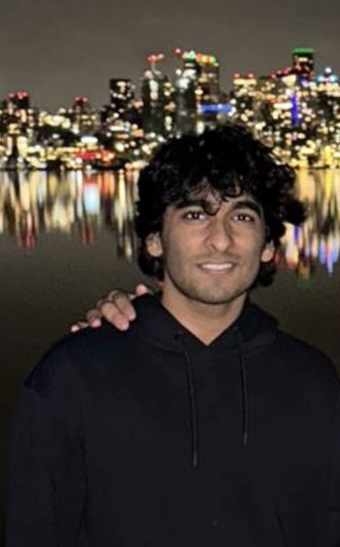
Hi! I’m Kabir, a junior majoring in Computer Science. Outside coursework, I enjoy playing the drums, board games and watching football. Looking forward to meeting you all this quarter!
2.2 Merav Frank
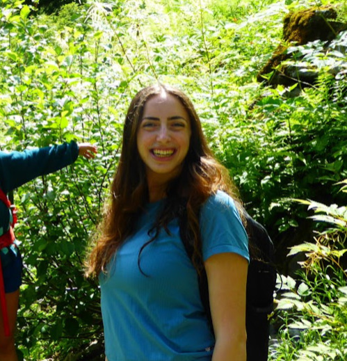
Hey, I’m Merav! I’m in my junior year and I’m majoring in computer science. This is my seventh quarter as a TA (and my second in CSE 332). Outside of school I love hiking, baking (especially brownies), and going to the beach whenever its warm enough. I’m excited to meet all of you throughout the quarter and feel free to reach out to me anytime!
2.3 Vicky Ye
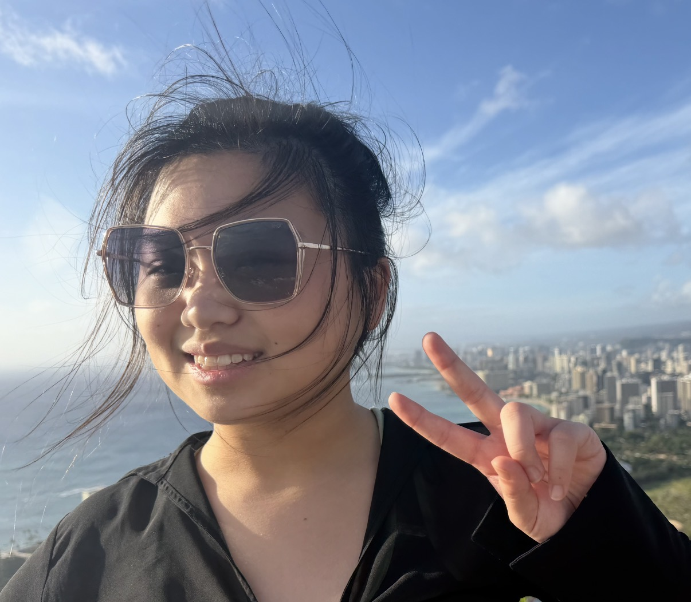
Hi everyone! I’m Vicky, a second-year Computer Science major. This will be my 3rd time being a 332 TA :D. Outside of classes, I enjoy skiing, playing video games (come ask me which ones I play), making playlists, doodling, and going on little spontaneous outdoor adventures. Looking forward to learning and working with you all this quarter! 🧡
2.4 Albert Du
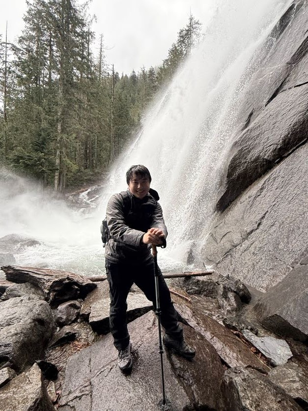
Hi friends! I’m Albert, a second year CS student and third time TA. These days, you might catch me reading about urban planning or finding new shortcuts around campus. I’m excited to meet everyone! Feel free to reach out or drop by my office hours to chat!
2.5 Jacklyn Cui
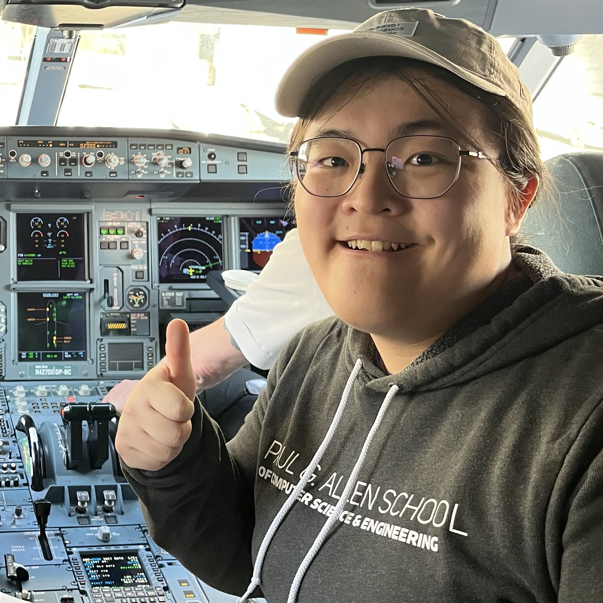
I’m Jacklyn! It was great to serve as a sixth-time TA for one of my favorite (and personally considered the most important) courses at the Allen School! Apart from doing Accessibility and HCI-related research, I also enjoy traveling and outdoor activities! Feel free to ping me if you have good recs on where to travel!
2.6 Andrew Leffingwell
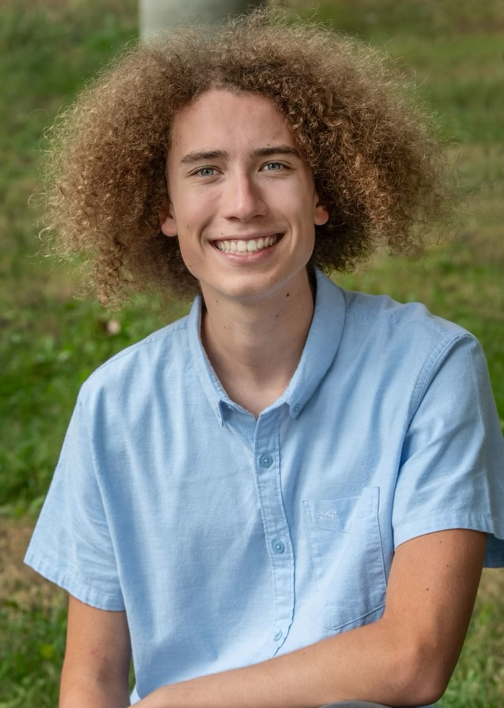
Hello! This is my second year at UW and I am very excited to TA CSE 332. Outside of coursework, I enjoy running, backpacking, and exploring Seattle. I also really enjoy playing board games and watching sports. Feel free to reach out!
2.7 Ben Bioren
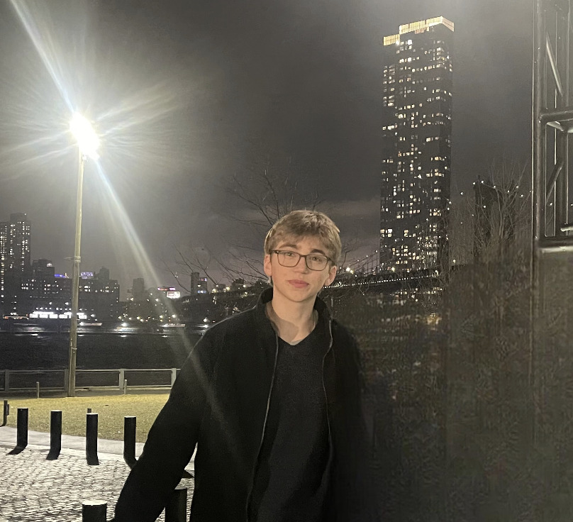
Hi, I’m Ben! I’m a junior studying Computer Science and Math. Apart from doing robotics and medicine related research, I love skiing and playing soccer. Always feel free to reach out with any questions or concerns. I’m excited to meet everyone this quarter!
2.8 Rubee Zhao
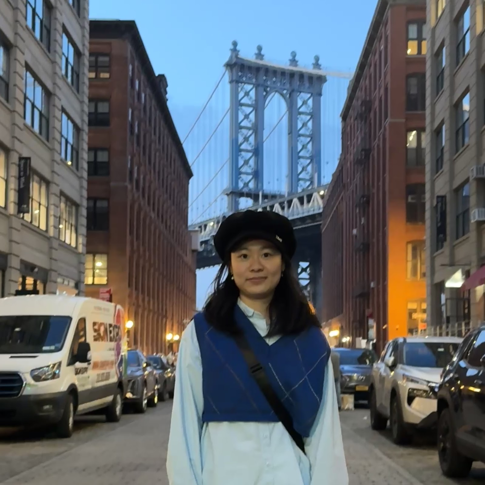
Hi all! I am Rubee majoring in CS and Math. I come from Beijing and this is my fifth time teaching this course! I went to Silence Wang’s concert this spring break. I also traveled to New York last week and it was fun. Feel free to say hi in my office hour and looking forward to see you all.
2.9 Hana Smahi
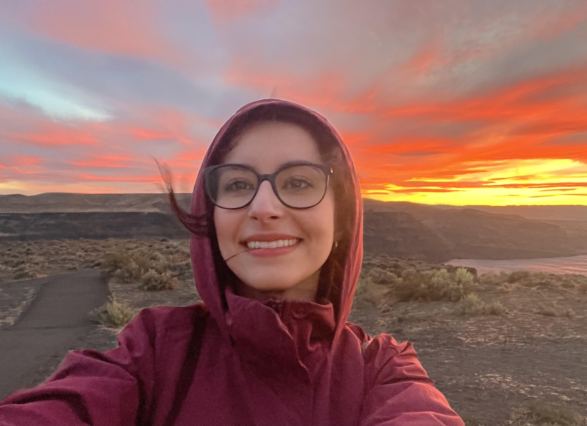
Hello there! I’m Hana and I’m excited to be back for my seventh quarter as a 332 TA. Outside of computer science, I love reading and being outdoors. Please don’t hesitate to reach out or stop by office hours whether it’s a course related question or sharing good reads/hike spots (and there may be candy…not a bribe…). Looking forward to meeting you all!
2.10 Anthony He
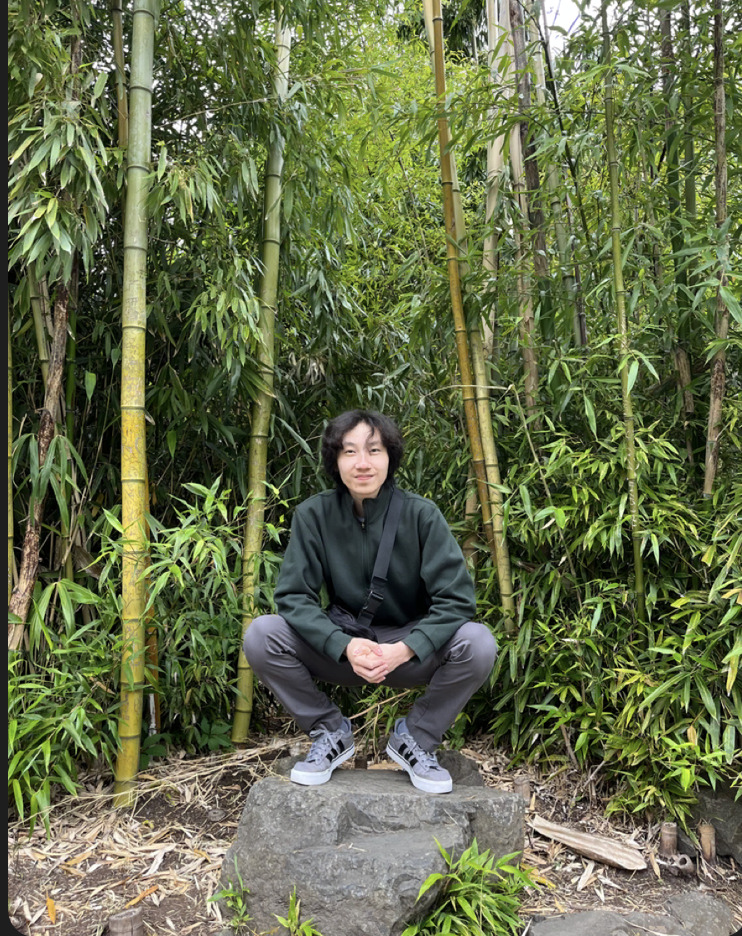
Hi, I’m Anthony! I’m a 3rd year studying CS, and this will be my 3rd time TA’ing for 332. In my free time I like watching soccer and skiing. Looking forward to meeting you all next quarter :)
2.11 Juliette Park
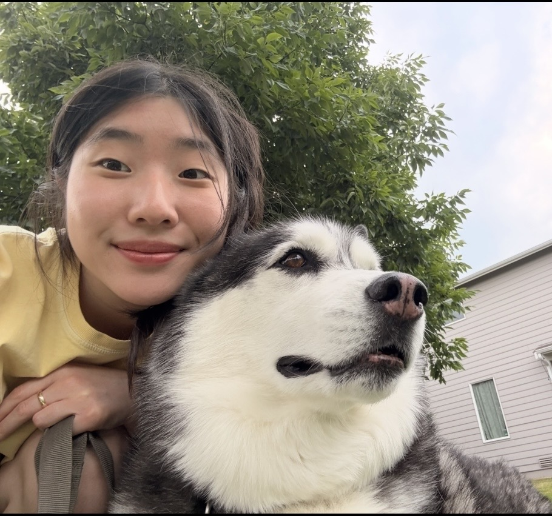
Hello! My name is Juliette and I’m a BS/MS student in CS minoring in Slavic Literature (please come chat about your current reads!). In my free time, I like bird watching and to walk my dog, pet my dog, and give my dog kisses. I’m very excited to meet you all!
2.12 Josh Yin

Hi, I’m Josh! I’m a 3rd year BS/MS student. I like doing human activities like sleeping and eating. I also enjoy hiking, sailing, and chatting with friends. Looking forward to meeting y’all this quarter!
2.13 Cindy Ni
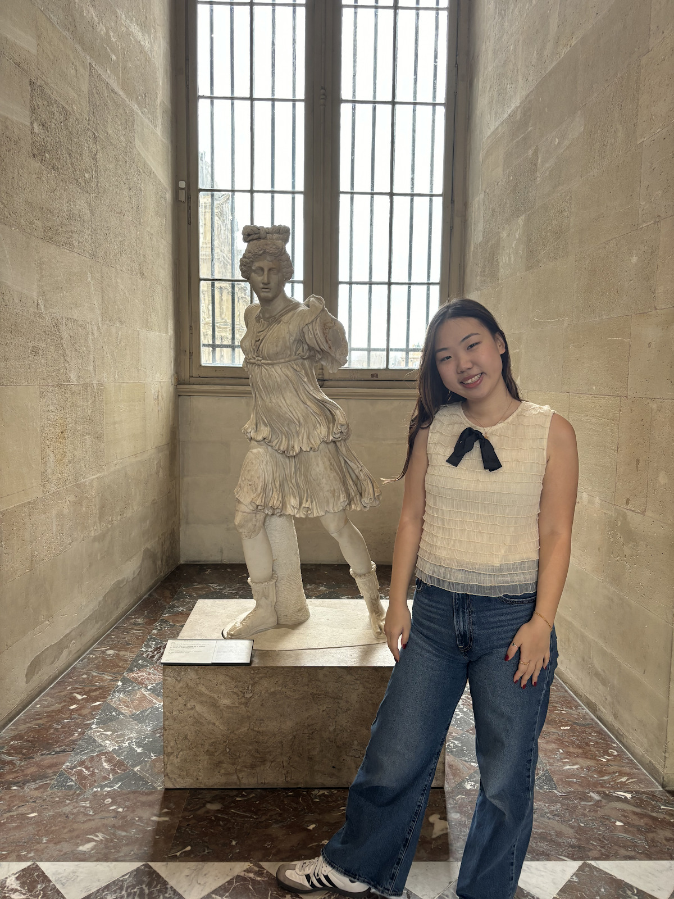
Hi, I’m Cindy! I’m a third-year CS major and I’m super excited to return to 332 as a TA. Hope we have a great time this quarter!
2.14 Lucas Ng
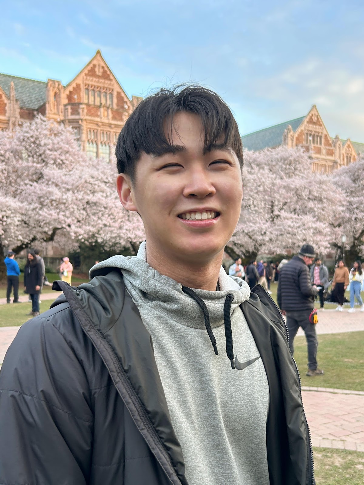
Hi! I’m Lucas, an undergrad studying CS. Outside of school, I enjoy eating good food, going to the gym, playing and watching sports, and sleeping. Super stoked to be TAing 332 this quarter and feel free to talk to me about anything. Excited to meet and work with yall!
2.15 Kevin Luo
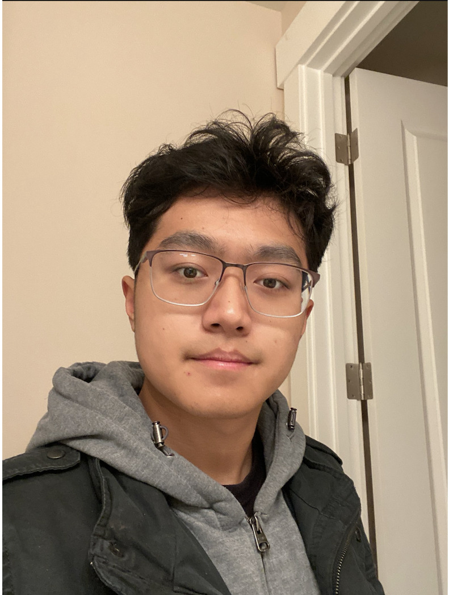
Hi, I’m Kevin! I’m a junior doing Computer Science, and outside coursework I like to hike, write, and listen to music. I’m excited to meet everyone, so feel free to reach out or drop by my office hours to chat!